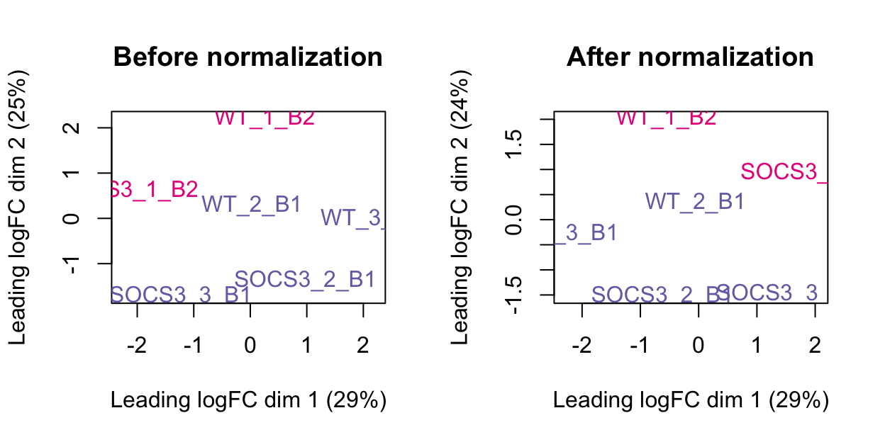

Introduction
This report includes an analysis of the Socs3 knockout bulk RNA-sequencing data. The data includes 6 samples, 3 from the control group (wild-type) and 3 from the Socs3 knockout group. The samples are from bone tissue of mice (and some samples contain multiple mice). We are interested in seeing if there are differences in gene expression between these groups, as this will help to understand the role of Socs3.
The gene filtering, normalisation, MDS plot and differential expression testing is based on the guide RNA-seq analysis is easy as 1-2-3 with limma, Glimma and edgeR (Law et al.2018), see https://pmc.ncbi.nlm.nih.gov/articles/PMC4937821/.
Setting up the data
There are a number of pre-processing steps required to obtain a count matrix of this data.
First, the .fastq files from the same sample and read combination were merged together (see code/03_merge_lanes.sh.
There are 6 samples so this results in 12 .fastq files (read 1 and read 2 for each sample).
Next, the paired-end reads were aligned to the reference mouse transcriptome using kallisto.
Reading in count data
Since kallisto uses transcript IDs instead of gene IDs, we will use the biomaRt package to map transcript IDs to gene IDs.
When we import the data using tximport, the transcripts are aggregated at the gene level using this mapping.
Show code
samples_output <- list.files(here("data/kallisto"))
# Get this to work and look at the files
file_paths <- here("data/kallisto/", samples_output, "abundance.h5")
names(file_paths) <- gsub("_output", "", samples_output)
# Use biomaRt to map transcripts to gene_ids
mart <- useMart("ensembl", dataset = "mmusculus_gene_ensembl", verbose = TRUE)BioMartServer running BioMart version: 0.7
Mart virtual schema: default
Mart host: https://www.ensembl.org:443/biomart/martserviceShow code
transcript_map <- getBM(
attributes = c("ensembl_transcript_id",
"ensembl_gene_id",
"external_gene_name",
"chromosome_name"),
mart = mart
)
txi.kallisto <- tximport(
file_paths,
type = "kallisto",
txOut = FALSE,
tx2gene = transcript_map[, c("ensembl_transcript_id", "ensembl_gene_id")],
ignoreTxVersion = TRUE
)Next, we create a DGEList object from the count data and the sample sheet.
The count data contains a column for each sample of the experiment (6 in total).
The sample sheet (located in data/sample_sheet.csv) includes information about the mouse genotype, the batches, and other experimental information.
The DGEList object includes counts for the numeric data, and the samples and genes data frames, which contains information about the samples and features, respectively.
Show code
# Read in count data
counts <- txi.kallisto$counts
# Subset the transcript_map to match our data
dim(transcript_map)
gene_info <- transcript_map[match(row.names(counts), transcript_map$ensembl_gene_id), ]
dim(gene_info)
gene_info$CHR <- gene_info$chromosome_name
gene_info$SYMBOL <- gene_info$external_gene_name
gene_info$ENSEMBL <- gene_info$ensembl_gene_idThere are 36091 genes currently in the object.
Show code
Kallisto mapping information
The table below shows the percentage of reads which are mapped. This mapping rate looks okay.
Show code
library(jsonlite)
# Path to each kallisto folder
sample_dirs <- dirname(file_paths)
# Extract mapping rate from run_info.json for each sample
mapping_rates <- sapply(sample_dirs, function(dir) {
info <- fromJSON(file.path(dir, "run_info.json"))
info$p_pseudoaligned
}) / 100
df <- data.frame(
File = gsub("_22YMFCLT3_output", "", basename(sample_dirs)),
Mapping_rate = mapping_rates)
df$Group <- samples$group[match(df$File, samples$Sample_name)]
rownames(df) <- NULL
df[, c("Group", "Mapping_rate")]|>
janitor::adorn_pct_formatting() |>
knitr::kable() | Group | Mapping_rate |
|---|---|
| WT_1_B2 | 53.8% |
| SOCS3_1_B2 | 49.6% |
| SOCS3_2_B1 | 73.0% |
| SOCS3_3_B1 | 63.7% |
| WT_2_B1 | 64.8% |
| WT_3_B1 | 73.0% |
Next we create a DGEList from the count data and the sample sheet. The count data contains a column for each sample of the experiment (6 in total). The sample sheet includes information about the mouse genotype and the batches.
The DGEList object includes counts for the numeric data, and the samples and genes data frames, which contains information about the samples and features, respectively.
Show code
[1] 36091 6Organising sample information
Show code
group <- dge$samples$group
batch <- gsub(".+_", "", dge$samples$group)
treatment <- gsub("_.+", "", dge$samples$group)
# Make sample info factors
group <- factor(group, levels=c("WT_1_B2", "WT_2_B1", "WT_3_B1",
"SOCS3_1_B2", "SOCS3_2_B1", "SOCS3_3_B1"))
batch <- factor(batch)
treatment <- factor(treatment, levels=c("WT", "SOCS3"))
# Add sample info into samples slot.
dge$samples$batch <- batch
dge$samples$treatment <- treatmentThere are 6 samples, 3 for each treatment.
Show code
table(group, treatment) treatment
group WT SOCS3
WT_1_B2 1 0
WT_2_B1 1 0
WT_3_B1 1 0
SOCS3_1_B2 0 1
SOCS3_2_B1 0 1
SOCS3_3_B1 0 1Show code
# Remove group, treatment and batch. These should only be accessed from dge!!!
rm(group, batch, treatment)Organising gene annotations
After mapping the sequencing reads to the transcriptome, we have Ensembl-style transcript identifiers.
These are used by mapping tools as they are unambiguous and highly stable.
We have used the biomaRt package to match these transcript IDs to gene IDs.
From the gene IDs, we also obtain gene symbols and chromosome information, for easier interpretation of the results.
Show code
# There are hundreds of duplicate symbols.
table(duplicated(gene_info$SYMBOL))
# No duplicate ENSEMBL id's now.
table(duplicated(gene_info$ENSEMBL))There are some Ensembl IDs which map to the same gene symbols. For these features we will refer to the genes using both the Ensembl ID and the symbol, for example Pakap_ENSMUSG00000038729.25. This ensures that rownames are unique, giving us a robust way of subsetting the object and referring to genes in the analysis.
Show code
library(scuttle)
rownames(dge) <- uniquifyFeatureNames(dge$genes$ENSEMBL, dge$genes$SYMBOL)
# Duplicate features with symbols have their ID concatenated.
# rownames(dge)[duplicated(dge$genes$SYMBOL) & !is.na(dge$genes$SYMBOL)]
# Now there are unique rownames.
table(duplicated(rownames(dge)))We save the DGEList object to file, located at data/kallisto.dge.rds.
We remove features which arent expressed in any samples of our data.
In doing this we also check that this have not removed any of our genes of interest, which include Socs1, Socs3 and Bcl3. Reassuringly, these features are not removed during this step and thus have some expression in the data.
Show code
[1] TRUE TRUE TRUEShow code
[1] FALSE FALSE FALSEShow code
# Remove features which aren't expressed in any samples.
dge <- dge[(rowSums(dge$counts) > 0), ]There are 8905 genes which arent expressed in any of the samples. These will be removed by any filtering metric that we choose to use. There are 27186 genes remaining for analysis.
Pre-processing
Show code
keep.exprs <- filterByExpr(dge, group=dge$samples$group)
dge <- dge[keep.exprs,, keep.lib.sizes=FALSE]
dim(dge)
# This function keeps genes with about 10 read counts or more in a minimum
# number of samples.
sum(keep.exprs == FALSE)Filtering using FilterByExpr from the edgeR package removes genes with very low expression.
There are 5414 genes which are removed due to having low expression.
There are 21772 genes remaining for analysis.
These low quality genes result in a spike near 0 in the left-hand side of the plot below. In the filtered data, the lowly expressed genes are mostly removed. The samples have a similar distribution of genes in this plot.
Show code
# Figure 1: Density of the raw post filtered data
# M is the mean, L is the median
L <- mean(dge$samples$lib.size) * 1e-6
M <- median(dge$samples$lib.size) * 1e-6
lcpm.cutoff <- log2(10/M + 2/L)
library(RColorBrewer)
nsamples <- length(unique(dge$samples$group))
col <- brewer.pal(nsamples, "Paired")
par(mfrow=c(1,2))
plot(density(lcpm[,1]), col=col[1], lwd=2, ylim=c(0,0.26), las=2, main="", xlab="")
title(main="A. Raw data", xlab="Log-cpm")
abline(v=lcpm.cutoff, lty=3)
for (i in 2:nsamples){
den <- density(lcpm[,i])
lines(den$x, den$y, col=col[i], lwd=2)
}
legend("topright", as.character(unique(dge$samples$group)), text.col=col, bty="n")
lcpm <- edgeR::cpm(dge, log=TRUE)
plot(density(lcpm[,1]), col=col[1], lwd=2, ylim=c(0,0.26), las=2, main="", xlab="")
title(main="B. Filtered data", xlab="Log-cpm")
abline(v=lcpm.cutoff, lty=3)
for (i in 2:nsamples){
den <- density(lcpm[,i])
lines(den$x, den$y, col=col[i], lwd=2)
}
legend("topright", as.character(unique(dge$samples$group)), text.col=col, bty="n")
Quality control
Show code
# Set colours for this data set
group_colours <- setNames(
ggthemes::tableau_color_pal("Tableau 10")(6),
levels(dge$samples$group))
batch_colours <- setNames(
brewer.pal(8, "Dark2")[3:4],
levels(dge$samples$batch))
treatment_colours <- setNames(
brewer.pal(8, "Dark2")[1:2],
levels(dge$samples$treatment))Library size
The bar charts below show the library sizes for each sample, coloured by sample, batch and treatment.
The samples from batch 2 have smaller library sizes on average than the batch 1 samples.
The sample WT_2_B1 from batch 1 also has a small library size.
Show code
# this factor ordering for group is helpful for QC, as it puts everything from
# the same batch next to each other.
dge$samples$group <- factor(dge$samples$group,
levels = c("WT_2_B1", "WT_3_B1", "SOCS3_2_B1", "SOCS3_3_B1", "WT_1_B2", "SOCS3_1_B2"))
p1 <- ggplot(data = dge$samples, mapping = aes(y = group, x = lib.size, fill = group)) +
geom_col() +
scale_fill_manual(values = group_colours) +
scale_y_discrete(limits = rev(levels(dge$samples$group))) +
theme_minimal()
p2 <- ggplot(data = dge$samples, mapping = aes(y = group, x = lib.size, fill = batch)) +
geom_col() +
scale_fill_manual(values = batch_colours) +
scale_y_discrete(limits = rev(levels(dge$samples$group))) +
theme_minimal()
p3 <- ggplot(data = dge$samples, mapping = aes(y = group, x = lib.size, fill = treatment)) +
geom_col() +
scale_fill_manual(values = treatment_colours) +
scale_y_discrete(limits = rev(levels(dge$samples$group))) +
theme_minimal()
(p1 / p2 / p3) + plot_layout(guides = "collect")We can also look at some other experimental variables that could explain the different library sizes. The bar charts below are coloured by the number of mice used, and the concentration of RNA. Since the batch 2 samples only had one mice each, this could explain the lower library size for these samples. The concentration also has a moderate correlation with the library size.
Show code
p1 <- ggplot(data = dge$samples, mapping = aes(y = group, x = lib.size, fill = group)) +
geom_col() +
scale_fill_manual(values = group_colours) +
scale_y_discrete(limits = rev(levels(dge$samples$group))) +
theme_minimal()
p2 <- ggplot(data = dge$samples, mapping = aes(y = group, x = lib.size, fill = nMice)) +
geom_col() +
scale_y_discrete(limits = rev(levels(dge$samples$group))) +
scale_fill_manual(
values = c("1" = "#6a51a3", "2" = "#c09be6", "3" = "#f2e5ff"),
name = "Number of Mice"
) +
theme_minimal()
p3 <- ggplot(data = dge$samples, mapping = aes(y = group, x = lib.size, fill = Concentration)) +
geom_col() +
scale_y_discrete(limits = rev(levels(dge$samples$group))) +
theme_minimal()
(p1 / p2 / p3) + plot_layout(guides = "collect")Show code
library(ggpubr)
ggplot(dge$samples, aes(x = Concentration, y = lib.size)) +
geom_point() +
stat_cor(method = "pearson") +
theme_light()Number of expressed features
Expressed features are defined as those with at least one count in a sample. There is a similar number of expressed features in each sample. Each sample has around 20,000 genes with at least one count.
Show code
| group | nFeatures | |
|---|---|---|
| WT_1_B2 | WT_1_B2 | 21414 |
| SOCS3_1_B2 | SOCS3_1_B2 | 21375 |
| SOCS3_2_B1 | SOCS3_2_B1 | 20939 |
| SOCS3_3_B1 | SOCS3_3_B1 | 21250 |
| WT_2_B1 | WT_2_B1 | 21272 |
| WT_3_B1 | WT_3_B1 | 20876 |
Proportion of mitochondrial genes
Show code
table(dge$genes$CHR)
1 10 11 12 13 14
1302 1027 1621 886 876 873
15 16 17 18 19 2
804 678 1088 539 694 1715
3 4 5 6 7 8
1012 1281 1263 1260 1772 1022
9 GL456210.1 GL456211.1 GL456212.1 GL456221.1 JH584304.1
1202 3 3 2 5 1
MT X Y
13 793 37 Show code
mito_set <- rownames(dge$genes)[dge$genes$CHR == "MT"]We can identify mitochondrial genes as genes with the chromosome number MT. There are 13 mitochondrial genes.
The chunk below works out the proportion of counts in each sample which are mitochondrial. High proportions of mitochondrial RNA can indicate that the cells in the sample are under stress. In this case, the proportion is very low (0.5-1.5%), which is good. There is however noticeably higher percentages in the batch2 data. There is no trend between treatment and mitochondrial proportion, which is good.
Show code
| group | mito_pct | |
|---|---|---|
| WT_1_B2 | WT_1_B2 | 1.1% |
| SOCS3_1_B2 | SOCS3_1_B2 | 1.2% |
| SOCS3_2_B1 | SOCS3_2_B1 | 0.7% |
| SOCS3_3_B1 | SOCS3_3_B1 | 0.6% |
| WT_2_B1 | WT_2_B1 | 0.6% |
| WT_3_B1 | WT_3_B1 | 0.5% |
Show code
library(scales)
# No trends here
p1 <- ggplot(data = dge$samples, mapping = aes(y = group, x = mito_pct, fill = group)) +
geom_col() +
scale_fill_manual(values = group_colours) +
scale_x_continuous(labels = label_percent()) +
scale_y_discrete(limits = rev(levels(dge$samples$group))) +
theme_minimal()
p2 <- ggplot(data = dge$samples, mapping = aes(y = group, x = mito_pct, fill = batch)) +
geom_col() +
scale_fill_manual(values = batch_colours) +
scale_x_continuous(labels = label_percent()) +
scale_y_discrete(limits = rev(levels(dge$samples$group))) +
theme_minimal()
p3 <- ggplot(data = dge$samples, mapping = aes(y = group, x = mito_pct, fill = treatment)) +
geom_col() +
scale_fill_manual(values = treatment_colours) +
scale_x_continuous(labels = label_percent()) +
scale_y_discrete(limits = rev(levels(dge$samples$group))) +
theme_minimal()
(p1 / p2 / p3) + plot_layout(guides = "collect")Normalisation
The impact of normalisation is subtle. Most notably, the third quartiles have been brought into alignment.
Show code
dge_raw <- dge
dge <- calcNormFactors(dge, method = "TMM")The library sizes for the samples are listed in the table below. This is the sum of counts across every gene for each sample. The counts in the Hisat2 analysis were roughly 10 million per sample, and the kallisto analysis has about 60 million counts per sample. Possibly this is due to the way each method handles PCR duplicates as well as some reads not mapping in the hisat2 version.
Show code
| Sample | Library size |
|---|---|
| WT_1_B2 | 59608523 |
| SOCS3_1_B2 | 58669677 |
| SOCS3_2_B1 | 85103114 |
| SOCS3_3_B1 | 67361444 |
| WT_2_B1 | 61145081 |
| WT_3_B1 | 74887905 |
Show code
# log-cpm in appropriate order for plot
# NOTE: NEVER USE WITH dge$samples!!! For plotting only!!
lcpm_raw_plot <- edgeR::cpm(dge_raw, log=TRUE)[, levels(dge_raw$samples$group)]
lcpm_plot <- edgeR::cpm(dge, log = TRUE)[, levels(dge$samples$group)]
# y-limit for plot
ylims <- range(c(lcpm_raw_plot, lcpm_plot))
par(mfrow=c(1,2))
boxplot(lcpm_raw_plot, las=2, col=col, main="", )
title(main="A. Example: Unnormalised data", ylab="Log-cpm")
boxplot(lcpm_plot, las=2, col=col, main="")
title(main="B. Example: Normalised data", ylab="Log-cpm")The plots below show the MDS plot before and after normalisation. This has a more obvious difference than the boxplot above.
Show code

After normalising the data, we need to evaluate the log counts again.
Visualising the data
MDS plot with the library size overlayed on the samples shows that the samples from batch 2 have lower library sizes than the samples from batch 1.
The sample WT_2_B1 clusters in the centre of the data which may indicate that it has different expression profiles to both the WT and SOCS3 samples. It also has a low library size.
Show code
par(mfrow = c(2,2))
plotMDS(lcpm, labels=dge$samples$group, col=group_colours[dge$samples$group])
title(main="A. Sample groups")
plotMDS(lcpm, labels=dge$samples$treatment, col=treatment_colours[dge$samples$treatment])
title(main="B. Treatment")
plotMDS(lcpm, labels=dge$samples$batch, col=batch_colours[dge$samples$batch])
title(main="C. Batch")
# MDS plot with library size
libsizes <- dge$samples$lib.size
# Create a viridis color function
color_func <- scales::col_numeric(viridis::viridis(100), domain = range(libsizes))
# Assign colors according to library sizes
point_colors <- color_func(libsizes)
plotMDS(lcpm, labels=NULL, pch = 16, cex = 4, col=point_colors)
title(main="D. Library Size") Comparing batches for genes of interest
The plots below show the expression of three of our genes of interest. Based on a priori knowledge, the SOCS3 knockout samples should express Socs1 and Socs3 less than the WT. Bcl3 should be higher in the SOCS3 group. The difference in these 6 samples is small and will not come out as significant in DE testing.
Show code
genes_of_interest <- c("Socs3", "Socs1", "Bcl3")
selected_genes <- grep(glue::glue_collapse(genes_of_interest, "|"), dge$genes$SYMBOL)
cpm <- edgeR::cpm(dge)
lcpm <- edgeR::cpm(dge, log=TRUE)
df <- data.frame(
y = t(lcpm[selected_genes, ]),
treatment = dge$samples$treatment,
batch = dge$samples$batch)
# NOTE: The order of the columns corresponds to the order of these genes in the
# rownames, NOT the order that was listed in genes_of_interest.
colnames(df)[1:3] <- gsub("y.", "", colnames(df)[1:3])
df$labels <- factor(paste0(df$batch, ".", df$treatment),
levels=c("B1.WT", "B1.SOCS3", "B2.WT", "B2.SOCS3"))
plot_list <- list()
for (i in 1:3) {
plot_list[[i]] <-
ggplot(data = df, mapping = aes(x = labels, y = .data[[genes_of_interest[i]]], group = labels, colour = treatment)) +
geom_point(size = 4) +
theme_minimal() +
theme(axis.text.x = element_text(angle = 45, hjust = 1)) +
ylab("Expression (log CPM)") +
scale_colour_manual(values = treatment_colours) +
ggtitle(label = paste0(genes_of_interest[i])
)
}
patchwork::wrap_plots(plot_list, ncol = 3, guides = "collect")Show code
# Table format
lcpm[selected_genes, ] |>
as.data.frame() |>
tibble::rownames_to_column("ENSEMBL") |>
dplyr::mutate(SYMBOL = dge$genes$SYMBOL[selected_genes], .after = "ENSEMBL") ENSEMBL SYMBOL WT_1_B2 SOCS3_1_B2 SOCS3_2_B1 SOCS3_3_B1 WT_2_B1
1 Socs1 Socs1 4.193607 3.863719 4.273091 4.255331 4.560619
2 Socs3 Socs3 7.550153 7.641535 8.646510 8.415269 8.926129
3 Bcl3 Bcl3 5.337065 5.360624 5.889254 5.586850 5.751546
WT_3_B1
1 4.181088
2 8.492555
3 5.422480Differential Expression Analyses
We will be including 21772 genes in our differential expression analyses. Due to the high number of tests being performed, it is very important to use some form of multiple testing correction such as the False Discovery Rate (FDR). When performing tens of thousands of tests, there will be many significant genes (p-value < 0.05) even if there are no real differences between the treatments. Multiple testing correction makes the threshold for p-values stricter to account for this.
Treatment with limma::voom method
Since there is a strong batch effect, we will include batch as a covariate in the differential expression analysis.
The analysis below uses the limma::voom() method for differential expression testing.
Show code
design <- model.matrix(~0+treatment+batch, data = dge$samples)
colnames(design) <- gsub("treatment|batch", "", colnames(design))
contr.matrix <- makeContrasts(
SOCS3vsWT = SOCS3 - WT,
levels = colnames(design))
contr.matrix Contrasts
Levels SOCS3vsWT
WT -1
SOCS3 1
B2 0Show code
v <- voom(dge, design, plot=TRUE)Show code
vfit <- lmFit(v, design)
vfit <- contrasts.fit(vfit, contrasts=contr.matrix)
efit <- eBayes(vfit)
plotSA(efit)Show code
de_results <- decideTests(efit)There is only one DE gene, and it is the immunoglobulin gene Igkv10-96. The top 20 genes (ranked by multiple-testing adjusted p-value) also includes some other Ig genes.
These genes are related to B-cells, and often indicate contamination from immune cells. Assess if it makes sense biologically to see less immunoglobulin expression in the Socs3 samples.
Show code
summary(de_results) SOCS3vsWT
Down 1
NotSig 21771
Up 0Show code
ensembl_transcript_id ensembl_gene_id external_gene_name
Ighv1-53 ENSMUST00000103523 ENSMUSG00000093894 Ighv1-53
Igkv10-96 ENSMUST00000103328 ENSMUSG00000094420 Igkv10-96
Col18a1 ENSMUST00000081654 ENSMUSG00000001435 Col18a1
Pla2g2d ENSMUST00000030528 ENSMUSG00000041202 Pla2g2d
Ighv1-82 ENSMUST00000196991 ENSMUSG00000095127 Ighv1-82
Ighv3-6 ENSMUST00000195124 ENSMUSG00000076672 Ighv3-6
Igkv4-79 ENSMUST00000103342 ENSMUSG00000076541 Igkv4-79
Ighv5-4 ENSMUST00000103444 ENSMUSG00000095612 Ighv5-4
Kera ENSMUST00000105286 ENSMUSG00000019932 Kera
Ptx4 ENSMUST00000054930 ENSMUSG00000044172 Ptx4
Serpina1d ENSMUST00000078869 ENSMUSG00000071177 Serpina1d
Atp6v0d2 ENSMUST00000029900 ENSMUSG00000028238 Atp6v0d2
Scx ENSMUST00000229271 ENSMUSG00000034161 Scx
Ighv2-2 ENSMUST00000103443 ENSMUSG00000096464 Ighv2-2
Adamts3 ENSMUST00000061427 ENSMUSG00000043635 Adamts3
Itk ENSMUST00000020664 ENSMUSG00000020395 Itk
St18 ENSMUST00000140079 ENSMUSG00000033740 St18
Spon2 ENSMUST00000200884 ENSMUSG00000037379 Spon2
Serpina1a ENSMUST00000072876 ENSMUSG00000066366 Serpina1a
Gm16867 ENSMUST00000183917 ENSMUSG00000093954 Gm16867
chromosome_name CHR SYMBOL ENSEMBL logFC
Ighv1-53 12 12 Ighv1-53 ENSMUSG00000093894 -4.0124141
Igkv10-96 6 6 Igkv10-96 ENSMUSG00000094420 -1.9378250
Col18a1 10 10 Col18a1 ENSMUSG00000001435 0.8990599
Pla2g2d 4 4 Pla2g2d ENSMUSG00000041202 1.3628040
Ighv1-82 12 12 Ighv1-82 ENSMUSG00000095127 -2.4104646
Ighv3-6 12 12 Ighv3-6 ENSMUSG00000076672 -2.1316224
Igkv4-79 6 6 Igkv4-79 ENSMUSG00000076541 -8.5587333
Ighv5-4 12 12 Ighv5-4 ENSMUSG00000095612 -4.6985150
Kera 10 10 Kera ENSMUSG00000019932 1.3713546
Ptx4 17 17 Ptx4 ENSMUSG00000044172 1.7728906
Serpina1d 12 12 Serpina1d ENSMUSG00000071177 -8.9632740
Atp6v0d2 4 4 Atp6v0d2 ENSMUSG00000028238 0.8859395
Scx 15 15 Scx ENSMUSG00000034161 0.9467223
Ighv2-2 12 12 Ighv2-2 ENSMUSG00000096464 -1.3168779
Adamts3 5 5 Adamts3 ENSMUSG00000043635 0.8820399
Itk 11 11 Itk ENSMUSG00000020395 -1.0334949
St18 1 1 St18 ENSMUSG00000033740 1.0191991
Spon2 5 5 Spon2 ENSMUSG00000037379 0.9688598
Serpina1a 12 12 Serpina1a ENSMUSG00000066366 -7.1386943
Gm16867 14 14 Gm16867 ENSMUSG00000093954 0.7835625
AveExpr t P.Value adj.P.Val B
Ighv1-53 4.959076 -15.353987 9.758266e-07 0.02124570 3.97176427
Igkv10-96 5.608252 -11.850155 5.842989e-06 0.06360678 3.98972269
Col18a1 4.994588 9.083638 3.517068e-05 0.24273285 2.66188572
Pla2g2d 4.331964 8.659995 4.825114e-05 0.24273285 2.16152507
Ighv1-82 4.091629 -8.069133 7.670576e-05 0.24273285 1.73742654
Ighv3-6 5.559966 -7.996783 8.134194e-05 0.24273285 1.97373795
Igkv4-79 -2.865525 -7.924391 8.629903e-05 0.24273285 -4.03276623
Ighv5-4 2.046985 -7.884291 8.919083e-05 0.24273285 -0.56749900
Kera 4.484776 7.406839 1.334934e-04 0.32293529 1.54837431
Ptx4 2.414982 6.526239 2.973713e-04 0.64743689 0.39576299
Serpina1d -1.916314 -6.311802 3.658982e-04 0.66979123 -3.89348036
Atp6v0d2 6.733194 6.301115 3.697491e-04 0.66979123 0.69001177
Scx 2.755483 6.169555 4.210637e-04 0.66979123 0.07625135
Ighv2-2 3.877833 -6.080932 4.601085e-04 0.66979123 0.33740415
Adamts3 3.354136 6.007886 4.953433e-04 0.66979123 0.16487991
Itk 4.535894 -5.997187 5.007532e-04 0.66979123 0.34735917
St18 3.434900 5.954529 5.229860e-04 0.66979123 0.09974794
Spon2 3.673332 5.868768 5.710967e-04 0.69077324 0.12662941
Serpina1a -1.348386 -5.796686 6.153696e-04 0.70514881 -3.62160400
Gm16867 4.730063 5.633636 7.303374e-04 0.79032187 0.02506500Show code
# Write to a file
dir.create(here("output/DEGs/kallisto_analysis"), recursive = TRUE)
write.table(sorted_de, file=here("output/DEGs/kallisto_analysis/kallisto_treatment_voom.tsv"),
sep="\t", quote=FALSE, row.names=FALSE)A table of the differential expression results are saved in output/DEGs/kallisto_analysis/kallisto_treatment_voom.tsv.
The rows are sorted so the genes with the lowest adjusted p-value (FDR) are at the top.
The results of testing for our genes of interest are shown below.
Show code
# Results for the genes of interest are not significant
sorted_de[sorted_de$SYMBOL %in% genes_of_interest, ] ensembl_transcript_id ensembl_gene_id external_gene_name
Socs1 ENSMUST00000229866 ENSMUSG00000038037 Socs1
Bcl3 ENSMUST00000135609 ENSMUSG00000053175 Bcl3
Socs3 ENSMUST00000054002 ENSMUSG00000053113 Socs3
chromosome_name CHR SYMBOL ENSEMBL logFC
Socs1 16 16 Socs1 ENSMUSG00000038037 -0.16771833
Bcl3 7 7 Bcl3 ENSMUSG00000053175 0.11362070
Socs3 11 11 Socs3 ENSMUSG00000053113 -0.08669159
AveExpr t P.Value adj.P.Val B
Socs1 4.219505 -1.2222948 0.2603406 0.9998741 -5.393089
Bcl3 5.557284 0.8798906 0.4075070 0.9998741 -5.931607
Socs3 8.278582 -0.6141822 0.5581169 0.9998741 -6.163115Plots of the most differentially expressed genes
Plots of the most differentially expressed genes to see if the test is doing what we want it to do. There are several Ig genes here, and a collagen gene.
Show code
top_genes <- head(rownames(sorted_de), n = 6)
selected_genes <- match(top_genes, rownames(dge))
df <- data.frame(
y = t(lcpm[selected_genes, ]),
treatment = dge$samples$treatment,
batch = dge$samples$batch)
colnames(df)[1:length(top_genes)] <- rownames(dge)[selected_genes]
df$labels <- factor(paste0(df$batch, ".", df$treatment),
levels=c("B1.WT", "B1.SOCS3", "B2.WT", "B2.SOCS3"))
plot_list <- list()
for (i in 1:length(top_genes)) {
plot_list[[i]] <-
ggplot(data = df, mapping = aes(x = labels, y = .data[[top_genes[i]]], group = labels, colour = treatment)) +
geom_point(size = 4) +
theme_minimal() +
theme(axis.text.x = element_text(angle = 45, hjust = 1)) +
ylab("Expression (log CPM)") +
scale_colour_manual(values = treatment_colours) +
ggtitle(label = paste0(top_genes[i])
)
}
patchwork::wrap_plots(plot_list, ncol = 3, guides = "collect") Show code
# Corresponds to:
head(de_table, n = 6) ensembl_transcript_id ensembl_gene_id external_gene_name
Ighv1-53 ENSMUST00000103523 ENSMUSG00000093894 Ighv1-53
Igkv10-96 ENSMUST00000103328 ENSMUSG00000094420 Igkv10-96
Col18a1 ENSMUST00000081654 ENSMUSG00000001435 Col18a1
Pla2g2d ENSMUST00000030528 ENSMUSG00000041202 Pla2g2d
Ighv1-82 ENSMUST00000196991 ENSMUSG00000095127 Ighv1-82
Ighv3-6 ENSMUST00000195124 ENSMUSG00000076672 Ighv3-6
chromosome_name CHR SYMBOL ENSEMBL logFC
Ighv1-53 12 12 Ighv1-53 ENSMUSG00000093894 -4.0124141
Igkv10-96 6 6 Igkv10-96 ENSMUSG00000094420 -1.9378250
Col18a1 10 10 Col18a1 ENSMUSG00000001435 0.8990599
Pla2g2d 4 4 Pla2g2d ENSMUSG00000041202 1.3628040
Ighv1-82 12 12 Ighv1-82 ENSMUSG00000095127 -2.4104646
Ighv3-6 12 12 Ighv3-6 ENSMUSG00000076672 -2.1316224
AveExpr t P.Value adj.P.Val B
Ighv1-53 4.959076 -15.353987 9.758266e-07 0.02124570 3.971764
Igkv10-96 5.608252 -11.850155 5.842989e-06 0.06360678 3.989723
Col18a1 4.994588 9.083638 3.517068e-05 0.24273285 2.661886
Pla2g2d 4.331964 8.659995 4.825114e-05 0.24273285 2.161525
Ighv1-82 4.091629 -8.069133 7.670576e-05 0.24273285 1.737427
Ighv3-6 5.559966 -7.996783 8.134194e-05 0.24273285 1.973738The top 20 differentially expressed genes using voom are shown below.
[1] "Ighv1-53" "Igkv10-96" "Col18a1" "Pla2g2d" "Ighv1-82"
[6] "Ighv3-6" "Igkv4-79" "Ighv5-4" "Kera" "Ptx4"
[11] "Serpina1d" "Atp6v0d2" "Scx" "Ighv2-2" "Adamts3"
[16] "Itk" "St18" "Spon2" "Serpina1a" "Gm16867" Treatment with edgeR::LRT method
Show code
design <- model.matrix(~ treatment + batch, data=dge$samples)
dge <- estimateDisp(dge, design)
fit <- glmFit(dge, design)
lrt <- glmLRT(fit, coef = 2)
# Find significant genes
de_results <- decideTests(lrt, adjust.method = "BH", p.value = 0.05)
summary(de_results) treatmentSOCS3
Down 59
NotSig 21691
Up 22Using glmLRT there are 59 genes which are downregulated in SOCS3, and 22 which are upregulated.
ensembl_transcript_id ensembl_gene_id external_gene_name
Ighv1-53 ENSMUST00000103523 ENSMUSG00000093894 Ighv1-53
Serpina1d ENSMUST00000078869 ENSMUSG00000071177 Serpina1d
Igkv4-79 ENSMUST00000103342 ENSMUSG00000076541 Igkv4-79
Igkv10-96 ENSMUST00000103328 ENSMUSG00000094420 Igkv10-96
Igkv9-124 ENSMUST00000196768 ENSMUSG00000096632 Igkv9-124
Ighv3-5 ENSMUST00000195619 ENSMUSG00000076670 Ighv3-5
chromosome_name CHR SYMBOL ENSEMBL logFC
Ighv1-53 12 12 Ighv1-53 ENSMUSG00000093894 -4.007728
Serpina1d 12 12 Serpina1d ENSMUSG00000071177 -9.776004
Igkv4-79 6 6 Igkv4-79 ENSMUSG00000076541 -10.546102
Igkv10-96 6 6 Igkv10-96 ENSMUSG00000094420 -1.934752
Igkv9-124 6 6 Igkv9-124 ENSMUSG00000096632 -6.219066
Ighv3-5 12 12 Ighv3-5 ENSMUSG00000076670 -7.575426
logCPM LR PValue FDR
Ighv1-53 6.0916737 143.76671 3.995733e-33 8.699510e-29
Serpina1d 2.5596776 128.73270 7.759510e-30 8.447003e-26
Igkv4-79 0.5236326 120.86874 4.082714e-28 2.962962e-24
Igkv10-96 5.9219024 85.87907 1.912824e-20 1.041150e-16
Igkv9-124 2.7873572 83.08807 7.847782e-20 3.417238e-16
Ighv3-5 0.6886644 52.57793 4.135092e-13 1.500487e-09 [1] "Ighv1-53" "Serpina1d" "Igkv4-79" "Igkv10-96" "Igkv9-124"
[6] "Ighv3-5" "Ighv1-82" "Ighv5-4" "Ighv2-5" "Ighv3-6"
[11] "Pla2g2d" "Igkv4-73" "Igkv1-133" "Col18a1" "Ighv1-25"
[16] "Serpina1c" "Igkv3-5" "Ighv1-63" "Ighv1-55" "Atp6v0d2" Show code
ensembl_transcript_id ensembl_gene_id external_gene_name
Socs1 ENSMUST00000229866 ENSMUSG00000038037 Socs1
Bcl3 ENSMUST00000135609 ENSMUSG00000053175 Bcl3
Socs3 ENSMUST00000054002 ENSMUSG00000053113 Socs3
chromosome_name CHR SYMBOL ENSEMBL logFC
Socs1 16 16 Socs1 ENSMUSG00000038037 -0.1890986
Bcl3 7 7 Bcl3 ENSMUSG00000053175 0.1079021
Socs3 11 11 Socs3 ENSMUSG00000053113 -0.0964003
logCPM LR PValue FDR
Socs1 4.235511 0.8994515 0.3429288 0.9999886
Bcl3 5.572940 0.3537078 0.5520217 0.9999886
Socs3 8.363292 0.2785081 0.5976808 0.9999886The LRT test also returns a number of Ig genes.
Plots of the most differentially expressed genes
Show code
top_genes <- head(rownames(de_table), n = 6)
selected_genes <- match(top_genes, rownames(dge))
df <- data.frame(
y = t(lcpm[selected_genes, ]),
treatment = dge$samples$treatment,
batch = dge$samples$batch)
colnames(df)[1:length(top_genes)] <- rownames(dge)[selected_genes]
df$labels <- factor(paste0(df$batch, ".", df$treatment),
levels=c("B1.WT", "B1.SOCS3", "B2.WT", "B2.SOCS3"))
plot_list <- list()
for (i in 1:length(top_genes)) {
plot_list[[i]] <-
ggplot(data = df, mapping = aes(x = labels, y = .data[[top_genes[i]]], group = labels, colour = treatment)) +
geom_point(size = 4) +
theme_minimal() +
theme(axis.text.x = element_text(angle = 45, hjust = 1)) +
ylab("Expression (log CPM)") +
scale_colour_manual(values = treatment_colours) +
ggtitle(label = paste0(top_genes[i])
)
}
patchwork::wrap_plots(plot_list, ncol = 3, guides = "collect") Show code
# Corresponds to:
head(de_table, n = 6) ensembl_transcript_id ensembl_gene_id external_gene_name
Ighv1-53 ENSMUST00000103523 ENSMUSG00000093894 Ighv1-53
Serpina1d ENSMUST00000078869 ENSMUSG00000071177 Serpina1d
Igkv4-79 ENSMUST00000103342 ENSMUSG00000076541 Igkv4-79
Igkv10-96 ENSMUST00000103328 ENSMUSG00000094420 Igkv10-96
Igkv9-124 ENSMUST00000196768 ENSMUSG00000096632 Igkv9-124
Ighv3-5 ENSMUST00000195619 ENSMUSG00000076670 Ighv3-5
chromosome_name CHR SYMBOL ENSEMBL logFC
Ighv1-53 12 12 Ighv1-53 ENSMUSG00000093894 -4.007728
Serpina1d 12 12 Serpina1d ENSMUSG00000071177 -9.776004
Igkv4-79 6 6 Igkv4-79 ENSMUSG00000076541 -10.546102
Igkv10-96 6 6 Igkv10-96 ENSMUSG00000094420 -1.934752
Igkv9-124 6 6 Igkv9-124 ENSMUSG00000096632 -6.219066
Ighv3-5 12 12 Ighv3-5 ENSMUSG00000076670 -7.575426
logCPM LR PValue FDR
Ighv1-53 6.0916737 143.76671 3.995733e-33 8.699510e-29
Serpina1d 2.5596776 128.73270 7.759510e-30 8.447003e-26
Igkv4-79 0.5236326 120.86874 4.082714e-28 2.962962e-24
Igkv10-96 5.9219024 85.87907 1.912824e-20 1.041150e-16
Igkv9-124 2.7873572 83.08807 7.847782e-20 3.417238e-16
Ighv3-5 0.6886644 52.57793 4.135092e-13 1.500487e-09The heatmap below shows the top 50 genes with the highest differential expression.
This is not the cleanest heatmap, with many genes which are only expressed highly in one of the three samples for a given treatment.
In other words, many of the effects are driven by strong signals from one sample, rather than consistent differences across all three samples for a condition.
The wild-type samples have higher expression of many Ig genes, while the Socs3 samples have higher expression of genes such as the mitochondrial gene mt-Co2 and the collagen gene Col18a1.
Show code
# Filter top 50 DE genes with FDR < 0.05
de_table_sig <- de_table[de_table$FDR < 0.05, ]
top50_genes <- rownames(head(de_table_sig, 50))
# Log2 CPM-normalized expression matrix
lcpm_top50 <- lcpm[top50_genes, ]
# Sample annotations: Treatment and Batch
annotation_col <- dge$samples[, c("treatment", "batch")]
# Z-score normalize rows (genes)
lcpm_scaled <- t(scale(t(lcpm_top50)))
# Plot heatmap
pheatmap(lcpm_scaled,
annotation_col = annotation_col,
annotation_colors = list(
batch = batch_colours,
treatment = treatment_colours),
show_rownames = TRUE,
show_colnames = FALSE,
cluster_cols = TRUE,
clustering_distance_rows = "euclidean",
clustering_distance_cols = "euclidean",
clustering_method = "complete",
fontsize_row = 6,
main = "Top DE genes for treatment using edgeR LRT \n (Uncorrected)")The heatmap below uses limma::removeBatchEffect to improve the visualisation. Note that the statistical test has not changed, this is just adjusting the values for plotting.
Show code
# Filter top 50 DE genes with FDR < 0.05
de_table_sig <- de_table[de_table$FDR < 0.05, ]
top50_genes <- rownames(head(de_table_sig, 50))
# Remove batch effect from logCPM for plotting
lcpm_corrected <- removeBatchEffect(lcpm, batch=dge$samples$batch)
# Log2 CPM-normalized expression matrix
lcpm_top50 <- lcpm_corrected[top50_genes, ]
# Sample annotations: Treatment and Batch
annotation_col <- dge$samples[, c("treatment", "batch")]
# Z-score normalize rows (genes)
lcpm_scaled <- t(scale(t(lcpm_top50)))
# Plot heatmap
pheatmap(lcpm_scaled,
annotation_col = annotation_col,
annotation_colors = list(
batch = batch_colours,
treatment = treatment_colours),
show_rownames = TRUE,
show_colnames = FALSE,
cluster_cols = TRUE,
clustering_distance_rows = "euclidean",
clustering_distance_cols = "euclidean",
clustering_method = "complete",
fontsize_row = 6,
main = "Top DE genes for treatment using edgeR LRT \n (Corrected)")Show code
# The LRT de_results object is already sorted by FDR.
# Write to a file
dir.create(here("output/DEGs/kallisto_analysis"), recursive = TRUE)
write.table(de_table, file=here("output/DEGs/kallisto_analysis/kallisto_treatment_LRT.tsv"),
sep="\t", quote=FALSE, row.names=FALSE)A table of the differential expression results are saved in output/DEGs/kallisto_analysis/kallisto_treatment_LRT.tsv.
The rows are sorted so the genes with the lowest FDR are at the top.
Batch with limma::voom method
There is a strong batch effect in this data set. In this section, I perform a DE test of just batch. This shows the genes that are upregulated in one batch but not the other, and are purely technical effects.
Show code
design <- model.matrix(~0+batch+treatment, data = dge$samples)
colnames(design) <- gsub("batch", "", colnames(design))
design B1 B2 treatmentSOCS3
WT_1_B2 0 1 0
SOCS3_1_B2 0 1 1
SOCS3_2_B1 1 0 1
SOCS3_3_B1 1 0 1
WT_2_B1 1 0 0
WT_3_B1 1 0 0
attr(,"assign")
[1] 1 1 2
attr(,"contrasts")
attr(,"contrasts")$batch
[1] "contr.treatment"
attr(,"contrasts")$treatment
[1] "contr.treatment"Show code
contr.matrix <- makeContrasts(
B2vsB1 = B2 - B1,
levels = colnames(design))
contr.matrix Contrasts
Levels B2vsB1
B1 -1
B2 1
treatmentSOCS3 0Show code
v <- voom(dge, design, plot=TRUE)
Show code
vfit <- lmFit(v, design)
vfit <- contrasts.fit(vfit, contrasts=contr.matrix)
efit <- eBayes(vfit)
plotSA(efit)
There are hundreds of genes in each direction which are significant when testing differences between batch 1 and batch 2.
Show code
tfit <- treat(vfit, lfc=0.1)
de_results <- decideTests(tfit)
summary(de_results) B2vsB1
Down 997
NotSig 20307
Up 468Show code
[1] "Il1a" "Rgs5" "Tnf" "Il1b" "Rasgef1b" "Mfap4"
[7] "Cd14" "Thbs4" "Il10" "Maff" "Ccl4" "Trim30b"
[13] "Cd83" "Sqstm1" "Jcad" "Sparcl1" "Timp3" "Col18a1"
[19] "Clic4" "Marcksl1"Show code
sorted_de <- de_table[order(de_table$adj.P.Val), ]
# Write to a file
dir.create(here("output/DEGs/batch_effect"), recursive = TRUE)
write.table(sorted_de, file=here("output/DEGs/batch_effect/kallisto_batch_voom.tsv"),
sep="\t", quote=FALSE, row.names=FALSE)Show code
# Filter DE genes with FDR < 0.05
de_table_sig <- de_table[de_table$adj.P.Val < 0.05, ]
# Select top 50 DE genes by smallest FDR
top50_genes <- head(rownames(de_table_sig), 50)
# Use voom-transformed expression matrix
expr_mat <- v$E[top50_genes, ]
# Sample annotations
annotation_col <- dge$samples[, c("batch", "treatment")]
# Z-score normalize rows (genes)
lcpm_scaled <- t(scale(t(expr_mat)))
# Plot heatmap
pheatmap(lcpm_scaled,
annotation_col = annotation_col,
annotation_colors = list(
batch = batch_colours,
treatment = treatment_colours),
show_rownames = TRUE,
show_colnames = FALSE,
cluster_cols = FALSE,
clustering_distance_rows = "euclidean",
clustering_distance_cols = "euclidean",
clustering_method = "complete",
fontsize_row = 6,
main = "Top DE genes for batch using voom")DE if we remove WT_2_B1
This analysis uses the limma::voom method.
We remove the problematic sample in the batch 1 group and reprocess the data.
MDS plots of the data without this sample are shown below.
Show code
dge2 <- dge[, dge$samples$group != "WT_2_B1"]
lcpm2 <- edgeR::cpm(dge2, log = TRUE)
par(mfrow = c(2,2))
plotMDS(lcpm2, labels=colnames(lcpm2), col=group_colours[colnames(lcpm2)])
title(main="A. Sample groups")
plotMDS(lcpm2, labels=dge2$samples$treatment, col=treatment_colours[dge2$samples$treatment])
title(main="B. Treatment")
plotMDS(lcpm2, labels=dge2$samples$batch, col=batch_colours[dge2$samples$batch])
title(main="C. Batch")
# MDS plot with library size
libsizes2 <- dge2$samples$lib.size
# Create a viridis color function
color_func <- scales::col_numeric(viridis::viridis(100), domain = range(libsizes2))
# Assign colors according to library sizes
point_colors2 <- color_func(libsizes2)
plotMDS(lcpm2, labels=NULL, pch = 16, cex = 4, col=point_colors2)
title(main="D. Library Size") Show code
design <- model.matrix(~0+treatment+batch, data = dge2$samples)
colnames(design) <- gsub("treatment|batch", "", colnames(design))
contr.matrix <- makeContrasts(
SOCS3vsWT = SOCS3 - WT,
levels = colnames(design))
contr.matrix Contrasts
Levels SOCS3vsWT
WT -1
SOCS3 1
B2 0Show code
v <- voom(dge2, design, plot=TRUE)Show code
vfit <- lmFit(v, design)
vfit <- contrasts.fit(vfit, contrasts=contr.matrix)
efit <- eBayes(vfit)
plotSA(efit)Show code
tfit <- treat(vfit, lfc=0.1)
de_results <- decideTests(tfit)
summary(de_results) SOCS3vsWT
Down 11
NotSig 21761
Up 0There are 11 genes which are more highly expressed in the controls. The Ig genes and Jchain are related to B-cells and plasma cells.
Show code
[1] "Igkv6-23" "Ighv1-53" "Igkv6-15" "Igkv10-96" "Ighv1-55"
[6] "Jchain" "Tox" "Ighv1-82" "Igkv9-124" "Igha"
[11] "Gpr55" "Ighv1-72" "Cnmd" "Ighv1-58" "Pla2g2d"
[16] "Ighv5-4" "Serpina1d" "Bcl11b" "Tnfsf8" "Ptpn5" Show code
# Write to a file
write.table(sorted_de, file=here("output/DEGs/kallisto_analysis/kallisto_5samples_treatment_voom.tsv"),
sep="\t", quote=FALSE, row.names=FALSE)DE with random treatment labels
If we randomly permute the treatment labels, i.e., intentionally mess up our data, what does the LRT test look like?
This section uses limma::voom().
Show code
set.seed(123)Show code
# Copy the object
dge_ <- dge
# Shuffle treatment labels
dge_$samples$treatment <- sample(dge_$samples$treatment)
design_ <- model.matrix(~ treatment + batch, data = dge_$samples)
dge_ <- estimateDisp(dge_, design_)
fit_ <- glmFit(dge_, design_)
lrt_ <- glmLRT(fit_, coef = 2)
# Find significant genes
de_results_ <- decideTests(lrt_, adjust.method = "BH", p.value = 0.05)There are far fewer DE genes in this case, which shows that our signal above is likely to be real.
Show code
summary(de_results_) treatmentSOCS3
Down 4
NotSig 21767
Up 1 ensembl_transcript_id ensembl_gene_id external_gene_name
Gm2007 ENSMUST00000177981 ENSMUSG00000094932 Gm2007
Gm15229 ENSMUST00000146636 ENSMUSG00000085880 Gm15229
Foxc1 ENSMUST00000062292 ENSMUSG00000050295 Foxc1
Ighv1-75 ENSMUST00000103544 ENSMUSG00000096020 Ighv1-75
Ighv8-5 ENSMUST00000194257 ENSMUSG00000102364 Ighv8-5
Potefam3a ENSMUST00000084046 ENSMUSG00000074449 Potefam3a
Myh4 ENSMUST00000018632 ENSMUSG00000057003 Myh4
Ighv3-8 ENSMUST00000103483 ENSMUSG00000076674 Ighv3-8
Kcnk18 ENSMUST00000065204 ENSMUSG00000040901 Kcnk18
Lum ENSMUST00000038160 ENSMUSG00000036446 Lum
Mroh4 ENSMUST00000137963 ENSMUSG00000022603 Mroh4
Bglap ENSMUST00000076048 ENSMUSG00000074483 Bglap
Dsc3 ENSMUST00000115848 ENSMUSG00000059898 Dsc3
Alpl ENSMUST00000030551 ENSMUSG00000028766 Alpl
Stmnd1 ENSMUST00000076622 ENSMUSG00000063529 Stmnd1
Enpp3 ENSMUST00000020169 ENSMUSG00000019989 Enpp3
Kpna2-ps ENSMUST00000120025 ENSMUSG00000083672 Kpna2-ps
Gm12226 ENSMUST00000144172 ENSMUSG00000078151 Gm12226
Igkv5-39 ENSMUST00000103370 ENSMUSG00000076569 Igkv5-39
Ighv3-4 ENSMUST00000193408 ENSMUSG00000103939 Ighv3-4
chromosome_name CHR SYMBOL ENSEMBL logFC
Gm2007 2 2 Gm2007 ENSMUSG00000094932 -9.7052087
Gm15229 X X Gm15229 ENSMUSG00000085880 7.2062234
Foxc1 13 13 Foxc1 ENSMUSG00000050295 -0.8019353
Ighv1-75 12 12 Ighv1-75 ENSMUSG00000096020 -3.7895471
Ighv8-5 12 12 Ighv8-5 ENSMUSG00000102364 -6.9525198
Potefam3a 8 8 Potefam3a ENSMUSG00000074449 6.8569197
Myh4 11 11 Myh4 ENSMUSG00000057003 5.1951482
Ighv3-8 12 12 Ighv3-8 ENSMUSG00000076674 -4.6346699
Kcnk18 19 19 Kcnk18 ENSMUSG00000040901 -6.3120558
Lum 10 10 Lum ENSMUSG00000036446 -1.0588937
Mroh4 15 15 Mroh4 ENSMUSG00000022603 6.3786357
Bglap 3 3 Bglap ENSMUSG00000074483 -0.8781689
Dsc3 18 18 Dsc3 ENSMUSG00000059898 6.4164619
Alpl 4 4 Alpl ENSMUSG00000028766 -0.6351976
Stmnd1 13 13 Stmnd1 ENSMUSG00000063529 6.2499584
Enpp3 10 10 Enpp3 ENSMUSG00000019989 -1.0425094
Kpna2-ps 17 17 Kpna2-ps ENSMUSG00000083672 7.2980602
Gm12226 11 11 Gm12226 ENSMUSG00000078151 -5.0751752
Igkv5-39 6 6 Igkv5-39 ENSMUSG00000076569 -2.4204263
Ighv3-4 12 12 Ighv3-4 ENSMUSG00000103939 7.9808127
logCPM LR PValue FDR
Gm2007 -0.2703938 66.79157 3.017859e-16 6.570482e-12
Gm15229 -2.5835771 23.12997 1.514125e-06 1.132512e-02
Foxc1 6.0478221 23.07195 1.560508e-06 1.132512e-02
Ighv1-75 2.6232300 21.42692 3.675736e-06 1.602908e-02
Ighv8-5 -2.8281855 21.42411 3.681123e-06 1.602908e-02
Potefam3a -2.7869402 18.82521 1.432611e-05 5.198469e-02
Myh4 -1.3660936 18.17569 2.014340e-05 5.894397e-02
Ighv3-8 3.1170949 18.03759 2.165863e-05 5.894397e-02
Kcnk18 -3.3130169 17.20649 3.352893e-05 8.053663e-02
Lum 8.6332902 16.89493 3.950702e-05 8.053663e-02
Mroh4 -3.2180534 16.83308 4.081556e-05 8.053663e-02
Bglap 6.0856786 16.66580 4.457736e-05 8.053663e-02
Dsc3 -3.1228978 16.52203 4.808820e-05 8.053663e-02
Alpl 7.3573092 16.04277 6.192748e-05 8.109438e-02
Stmnd1 -3.2621636 16.01031 6.299860e-05 8.109438e-02
Enpp3 3.6304868 15.99791 6.341246e-05 8.109438e-02
Kpna2-ps -2.3413436 15.94451 6.522661e-05 8.109438e-02
Gm12226 -2.2529186 15.89247 6.704478e-05 8.109438e-02
Igkv5-39 5.0866049 15.30925 9.126871e-05 9.706066e-02
Ighv3-4 -1.6262437 15.28273 9.255876e-05 9.706066e-02Concluding remarks
The output/DEGs/ directory contains CSV files summarising the differential expression results. The following are available on request:
- Full CSV tables of any data presented.
- PDF/PNG files of any static plots.